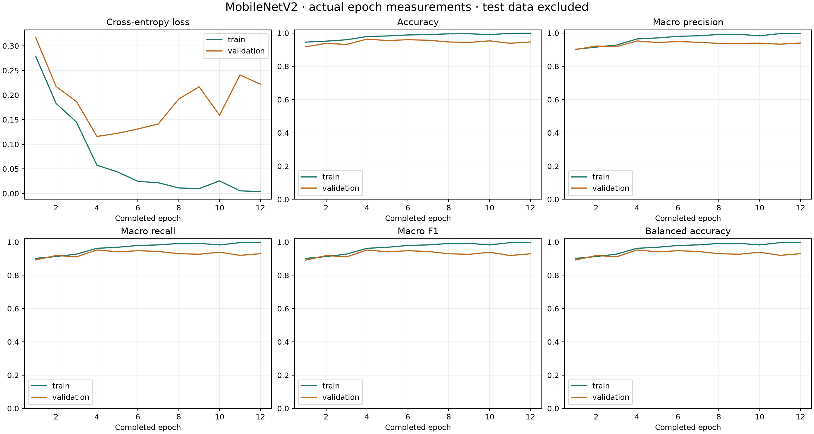
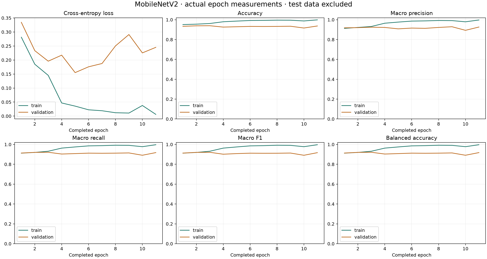

EGGGRADE · DEVELOPMENT REFINEMENT · 7 NOVEMBER 2026
What the existing 30 eggs can tell us
Neither declared preprocessing change improved validation macro F1. The original research checkpoint remains selected. Reliable Day 18 classification remains unresolved.
FIELD ACCURACY NOT YET ESTABLISHED.
No new independent eggs or photographs were added. The original 3,000 real age frames and retained Reject data remain intact.
Open the original study, all ten panel answers and the evaluation instrument.
Validation comparison
All three models use ImageNet-pretrained MobileNetV2 and the same whole-egg development partitions.
The selection rule was recorded before these two training runs: highest validation macro F1, then lower validation loss. Test results did not select between these candidates.
Selected: Original full frame. Scores above use 1,170 validation images: 300 Day 16, 300 Day 18 and 570 historical Reject images.
What changed and what was measured
The crop removes the outer left and right background using fixed columns 48–175 of the 224-pixel input,
resizes the crop and applies an elliptical mask. The second candidate also uses gamma 0.5 to brighten shadows. Both transformations are embedded in the exported ONNX graph.
They cannot recover biological detail absent from the capture. The geometry was inspected using development captures only.
Both refinements used seed 42, AdamW, batch size 32, head learning rate 0.0003, encoder learning rate 0.00001, weight decay 0.0001,
three head-only warmup epochs and then the last five encoder blocks. Batch-normalization statistics stayed frozen.
Each physical egg or public source family received equal weight within its class; classes received equal total weight.
The maximum was 30 epochs per refinement; patience was eight epochs without a macro-F1 gain greater than 0.001.
TF32 was disabled for the refinements to reduce GPU/CPU numerical differences; the original run used its preserved GPU settings.
This comparison evaluates complete training recipes, not an isolated causal estimate of cropping or gamma.
Split and leakage disclosure
The 60/20/20 age split remains 18 training eggs, six validation eggs and six original test eggs.
Training uses 12 Day 16 + six Day 18 eggs; validation and test each use four Day 16 + two Day 18 eggs.
Every frame from an identified egg stays in one partition. The six test eggs never enter weight fitting or threshold calibration.
The original test failures were already seen before this refinement. They motivated the new experiment, so any later reuse of those test eggs is a retest.
Group separation prevents known same-egg frame leakage; it does not restore a fresh test after inspecting its results.
Unknown public egg identities, shared incubation batches and class-specific camera backgrounds remain limitations.
Original full frame
12 completed epochs; checkpoint from epoch 4. Stop reason: validation_patience. Each epoch is one pass through the augmented training images. Validation macro F1 selects the checkpoint; eight stale epochs stop training. Equal-F1, lower-loss ties can replace the checkpoint without resetting patience.

Download every measured epoch
Selected checkpoint: validation
Accuracy: 0.9778 · Macro F1: 0.9711 · Balanced accuracy: 0.9711 · Weighted F1: 0.9778
Fixed egg-region crop
12 completed epochs; checkpoint from epoch 4. Stop reason: validation_patience. Each epoch is one pass through the augmented training images. Validation macro F1 selects the checkpoint; eight stale epochs stop training. Equal-F1, lower-loss ties can replace the checkpoint without resetting patience.

Download every measured epoch
Selected checkpoint: validation
Accuracy: 0.9632 · Macro F1: 0.9522 · Balanced accuracy: 0.9522 · Weighted F1: 0.9632
Crop + shadow brightening
11 completed epochs; checkpoint from epoch 2. Stop reason: validation_patience. Each epoch is one pass through the augmented training images. Validation macro F1 selects the checkpoint; eight stale epochs stop training. Equal-F1, lower-loss ties can replace the checkpoint without resetting patience.

Download every measured epoch
Selected checkpoint: validation
Accuracy: 0.9385 · Macro F1: 0.9200 · Balanced accuracy: 0.9200 · Weighted F1: 0.9385
Test evidence and its limits
Original first-test measurements, preserved unchanged; the original model was not retested or retrained on test eggs.
Accuracy: 0.8027 · Macro F1: 0.8114 · Balanced accuracy: 0.8222 · Weighted F1: 0.7907
Age-only raw result: 440/600 = 73.33%. The aggregate above also includes historical public Reject images. These are image-level results; 600 age frames still represent only six eggs.
No physical Reject egg has been tested. Historical Reject/Unfertilized annotations do not establish recognition of confirmed dead embryos or spoiled eggs through EMEET.
Unclassified results remain separate from Reject. No automatic operational promotion was made.
Panel answers after this refinement
The original linked report preserves the ten complete answers, including formulas and fresh repeat scans.
The added answer is: “We tried two declared preprocessing refinements on the same development eggs and selected only by validation macro F1.
We report all attempts, including unsuccessful ones. More views of the same 30 eggs do not create new independent test subjects.”
Precision = TP/(TP+FP); recall = TP/(TP+FN); F1 = 2TP/(2TP+FP+FN); accuracy = correct/total.
Macro F1 is the arithmetic mean of the three class F1 scores. Counts and confusion matrices above make those computations reproducible.
The initial fresh-repeat study remains unchanged: Day 16 was correct in 9/10 scans with one unclassified;
Day 18 was correct in 0/10, with seven wrong Day 16 outputs and three unclassified. Those correlated attempts are not ten new eggs.
No new physical-repeat result is claimed for the refinement. Exact zero-gap consistency and field accuracy remain unestablished.
Download measured comparison and selection · Download the declared experiment plan
Generated 2026-11-07T01:19:55.320885+00:00. Original evidence preserved; model deployment and physical field validation remain separate.